远程连接linux
管道符
管道是一种通信机制，通常用于进程间的通信。
它表现出来的形式将==前面每一个进程的输出（stdout）直接作为下一个进程的输入（stdin）==。
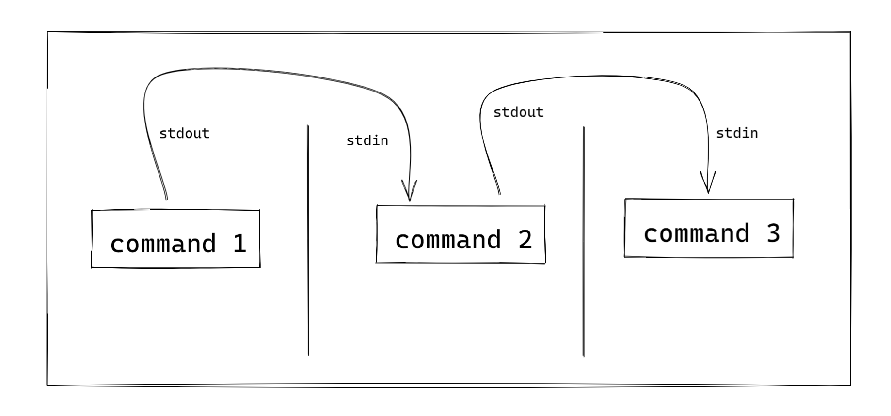
管道符使用很频繁的场景就是结合grep命令，对数据进行过滤。
grep过滤
需求：结合管道符，实现两个命令的二次加工（从对内容过滤的角度）。
1.找出chaoge用户的信息
# 不用管道符
[root@localhost opt]# grep 'chaoge' /etc/passwd
chaoge:x:1001:1001::/home/chaoge:/bin/bash
# 用管道符
[root@localhost opt]# cat /etc/passwd | grep 'chaoge'
chaoge:x:1001:1001::/home/chaoge:/bin/bash
如何理解管道符，二次加工
- 命令1执行完会有结果(stdout)，输出
- 以管道符为分界线
- 命令2等待接收数据，等待数据的stdin，输入，再次进行加工
- 可以再用管道符
- ...
文件过滤
这个过程，如果不用管道符，可以这么用。
[root@localhost opt]# find / -name '*.txt' > all.txt
[root@localhost opt]#
[root@localhost opt]# grep 'linux' all.txt
/usr/share/doc/linux-firmware-20180220/LICENCE.ralink-firmware.txt
/usr/share/doc/linux-firmware-20180220/LICENCE.rtlwifi_firmware.txt
/usr/share/doc/linux-firmware-20180220/LICENCE.tda7706-firmware.txt
/usr/share/doc/util-linux-2.23.2/deprecated.txt
/usr/share/doc/util-linux-2.23.2/sfdisk.txt
/usr/share/doc/certmonger-0.78.4/selinux.txt
/usr/share/doc/unoconv-0.6/selinux.txt
转换为管道符，就很简单了
# 找出机器上所有的txt文本，且包含linux的
[root@localhost opt]# find / -name '*.txt' |grep 'linux'
/usr/share/doc/linux-firmware-20180220/LICENCE.ralink-firmware.txt
/usr/share/doc/linux-firmware-20180220/LICENCE.rtlwifi_firmware.txt
/usr/share/doc/linux-firmware-20180220/LICENCE.tda7706-firmware.txt
/usr/share/doc/util-linux-2.23.2/deprecated.txt
/usr/share/doc/util-linux-2.23.2/sfdisk.txt
/usr/share/doc/certmonger-0.78.4/selinux.txt
/usr/share/doc/unoconv-0.6/selinux.txt
管道符会很频繁的用到，理解起来也很简单。
检查进程
[root@localhost opt]# ps -ef |grep sshd
root 1143 1 0 10:47 ? 00:00:00 /usr/sbin/sshd -D
root 16411 14408 0 16:05 pts/0 00:00:00 grep --color=auto sshd
检查端口
[root@localhost opt]# netstat -tunlp |grep ssh
tcp 0 0 0.0.0.0:22 0.0.0.0:* LISTEN 1143/sshd
tcp6 0 0 :::22 :::* LISTEN 1143/sshd
统计
统计/etc下有多少个文件？
[root@localhost opt]# ls /etc/ | wc -l
289
统计当前linux有多少个用户？（一般一个用户占/etc/passwd一行）
[root@localhost opt]# cat /etc/passwd |wc -l
46
xargs命令扩展
上面的管道符用法，基本处理的是字符串信息，且是从内容过滤的角度使用管道符。
而你真的想实现二次加工，对数据进行二次处理，就得借助xargs了。
xargs 又称管道命令，构造参数等。
简单的说 就是把 其他命令的给它的数据传递给它后面的命令作为参数
语法
命令1 | xargs 选项
选项
-i 用 {} 代替传递的数据
二次拷贝
1.找出/opt下所有的txt文件，且都备份一份
思路
1.找出所有txt文件
2.备份
这两件事，怎么合并为一个？xargs助你一臂之力
如果你不会xargs你可能挨个的，每一个进行cp拷贝。
root@localhost opt]# touch {1..10}.txt
[root@localhost opt]# ll
total 0
-rw-r--r-- 1 root root 0 Jan 8 16:56 10.txt
-rw-r--r-- 1 root root 0 Jan 8 16:56 1.txt
-rw-r--r-- 1 root root 0 Jan 8 16:56 2.txt
-rw-r--r-- 1 root root 0 Jan 8 16:56 3.txt
-rw-r--r-- 1 root root 0 Jan 8 16:56 4.txt
-rw-r--r-- 1 root root 0 Jan 8 16:56 5.txt
-rw-r--r-- 1 root root 0 Jan 8 16:56 6.txt
-rw-r--r-- 1 root root 0 Jan 8 16:56 7.txt
-rw-r--r-- 1 root root 0 Jan 8 16:56 8.txt
-rw-r--r-- 1 root root 0 Jan 8 16:56 9.txt
[root@localhost opt]#
[root@localhost opt]# cp 1.txt 1.txt.bak
使用xargs
[root@localhost opt]# ls
10.txt 1.txt 2.txt 3.txt 4.txt 5.txt 6.txt 7.txt 8.txt 9.txt
[root@localhost opt]#
[root@localhost opt]# ls |xargs -i cp {} {}.bak
[root@localhost opt]# ll
total 0
-rw-r--r-- 1 root root 0 Jan 8 16:56 10.txt
-rw-r--r-- 1 root root 0 Jan 8 16:57 10.txt.bak
-rw-r--r-- 1 root root 0 Jan 8 16:56 1.txt
-rw-r--r-- 1 root root 0 Jan 8 16:57 1.txt.bak
-rw-r--r-- 1 root root 0 Jan 8 16:56 2.txt
-rw-r--r-- 1 root root 0 Jan 8 16:57 2.txt.bak
-rw-r--r-- 1 root root 0 Jan 8 16:56 3.txt
-rw-r--r-- 1 root root 0 Jan 8 16:57 3.txt.bak
-rw-r--r-- 1 root root 0 Jan 8 16:56 4.txt
-rw-r--r-- 1 root root 0 Jan 8 16:57 4.txt.bak
-rw-r--r-- 1 root root 0 Jan 8 16:56 5.txt
-rw-r--r-- 1 root root 0 Jan 8 16:57 5.txt.bak
-rw-r--r-- 1 root root 0 Jan 8 16:56 6.txt
-rw-r--r-- 1 root root 0 Jan 8 16:57 6.txt.bak
-rw-r--r-- 1 root root 0 Jan 8 16:56 7.txt
-rw-r--r-- 1 root root 0 Jan 8 16:57 7.txt.bak
-rw-r--r-- 1 root root 0 Jan 8 16:56 8.txt
-rw-r--r-- 1 root root 0 Jan 8 16:57 8.txt.bak
-rw-r--r-- 1 root root 0 Jan 8 16:56 9.txt
-rw-r--r-- 1 root root 0 Jan 8 16:57 9.txt.bak
有没有办法，删除这些bak备份？
[root@localhost opt]# ls *.bak | xargs -i rm {}
图解xargs
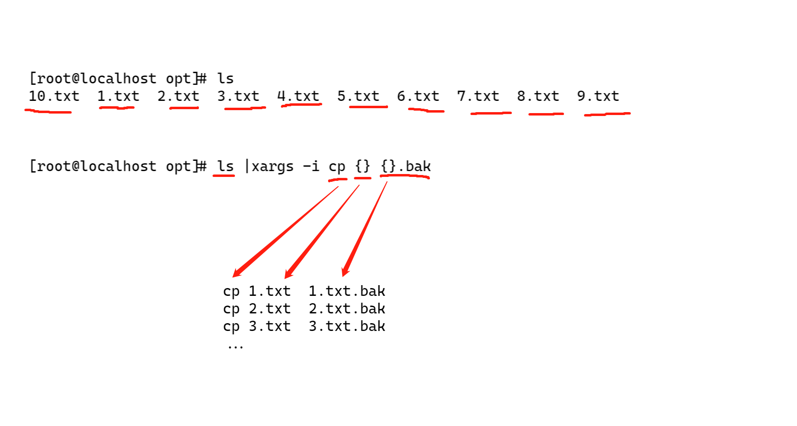
find结合xargs批量改名
# rename 【要被替换的字符】 【用作替换的字符】 【替换哪些文件】
[root@yuanlai-0224 ~]# find /linux0224/ -name '*.txt' |xargs -i rename txt log {}
[root@yuanlai-0224 ~]#
[root@yuanlai-0224 ~]# ll /linux0224/
total 16
-rw-r--r-- 1 root root 1761 Mar 9 15:09 doupocangqiong.log
-rw-r--r-- 1 root root 207 Mar 9 15:11 dudu.log
-rw-r--r-- 1 root root 7 Mar 9 15:00 hehe.log
-rw-r--r-- 1 root root 10 Mar 9 15:12 xixi
xargs默认打印
- xargs是将管道、或者stdin（标准输入）传来的数据，转换为命令行参数，也可以从文件的输出中读取数据。
- xargs可以将单行、多行的文本输入转为其他格式
- 如多行变单行
- 单行变多行
- xargs默认的命令是echo，也就是管道传递过来的数据，都是通过
echo 数据这样的 ，那就存在了换行，但是xargs将换行转为了空格。
多行合一
xargs默认会打印(echo)每一个构造参数，并且将每一个换行，都转为了空格。
xargs把文件中读出的数据，传递给了echo进行打印，每一个字符数据，构造成了命令的参数
参数我们都知道比如，后面的3个文件，就是指三个参数
ls -l chaoge.txt yuchao.txt cc.txt
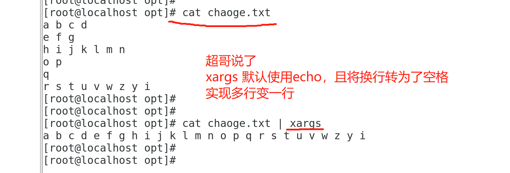
限制单行参数格式 -n
xargs
-n 限制命令行的参数个数
[root@yuanlai-0224 ~]# cat yuchao.txt
1
2
3
4
5
6
7
8
9
10
[root@yuanlai-0224 ~]#
[root@yuanlai-0224 ~]# cat yuchao.txt |xargs
1 2 3 4 5 6 7 8 9 10
[root@yuanlai-0224 ~]# cat yuchao.txt |xargs -n 2
1 2
3 4
5 6
7 8
9 10
[root@yuanlai-0224 ~]# cat yuchao.txt |xargs -n 3
1 2 3
4 5 6
7 8 9
10
linux网络基础
ifconfig查看网络信息
ifconfig命令的英文全称是“network interfaces configuring”，即用于配置和显示Linux内核中网络接口的网络参数。
用ifconfig命令配置的网卡信息，在网卡重启后机器重启后，配置就不存在，需要写入配置文件，方可永久生效。
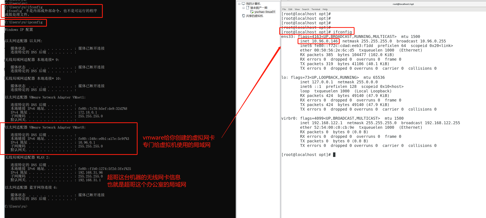
作用，获取网络设备信息
windows
ipconfig
linux
ifconfig
虚拟机是怎么有网络的
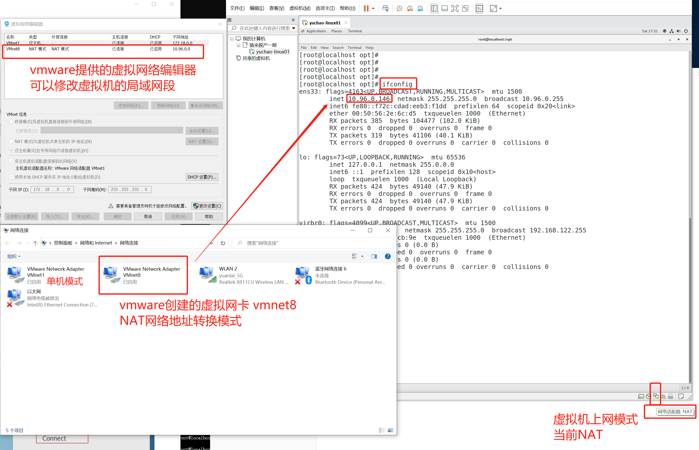
linux的网络信息
[root@localhost opt]# ifconfig
ens33: flags=4163<UP,BROADCAST,RUNNING,MULTICAST> mtu 1500
inet 10.96.0.146 netmask 255.255.255.0 broadcast 10.96.0.255
inet6 fe80::f72c:cdad:eeb3:f1dd prefixlen 64 scopeid 0x20<link>
ether 00:50:56:2e:6c:d5 txqueuelen 1000 (Ethernet)
RX packets 385 bytes 104477 (102.0 KiB)
RX errors 0 dropped 0 overruns 0 frame 0
TX packets 319 bytes 41106 (40.1 KiB)
TX errors 0 dropped 0 overruns 0 carrier 0 collisions 0
lo: flags=73<UP,LOOPBACK,RUNNING> mtu 65536
inet 127.0.0.1 netmask 255.0.0.0
inet6 ::1 prefixlen 128 scopeid 0x10<host>
loop txqueuelen 1000 (Local Loopback)
RX packets 424 bytes 49140 (47.9 KiB)
RX errors 0 dropped 0 overruns 0 frame 0
TX packets 424 bytes 49140 (47.9 KiB)
TX errors 0 dropped 0 overruns 0 carrier 0 collisions 0
virbr0: flags=4099<UP,BROADCAST,MULTICAST> mtu 1500
inet 192.168.122.1 netmask 255.255.255.0 broadcast 192.168.122.255
ether 52:54:00:c0:cb:9e txqueuelen 1000 (Ethernet)
RX packets 0 bytes 0 (0.0 B)
RX errors 0 dropped 0 overruns 0 frame 0
TX packets 0 bytes 0 (0.0 B)
TX errors 0 dropped 0 overruns 0 carrier 0 collisions 0
网卡名：ens33，只有正确配置了网络，才会获得该IP
lo: 本地回环地址 127.0.0.1，每一个机器都有这个IP
virbr0：虚拟网络接口，当你的linux安装了虚拟化软件，才会有这个，先忽略
网卡配置文件
大伙要记住，linux一切皆文件，你操作的数据，基本上都在某个文件里。
比如我们的网络信息，是通过这个文件生成的。
# 网卡目录
[root@localhost opt]# ls /etc/sysconfig/network-scripts/
# 网卡文件名字，和我们ifconfig看到的一样
[root@localhost opt]# ls -l /etc/sysconfig/network-scripts/ifcfg-*
-rw-r--r--. 1 root root 310 Dec 31 18:36 /etc/sysconfig/network-scripts/ifcfg-ens33
-rw-r--r--. 1 root root 254 Jan 3 2018 /etc/sysconfig/network-scripts/ifcfg-lo
配置文件详解
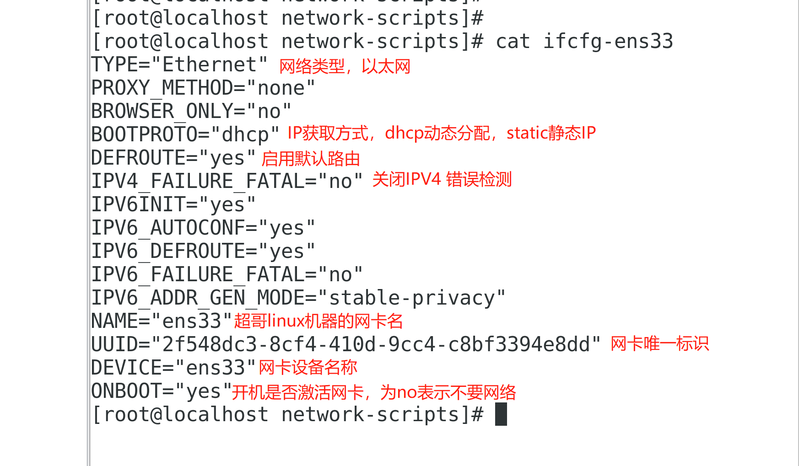
管理network服务
一个linux想要能上网，得配置网络，步骤如下
- 你的vmware正确的安装了虚拟网卡
- 比如你的笔记本没有网卡，你咋上网？
- 你的虚拟机正确选择了网络连接方式
- 超哥又不插网线，又不连WIFI，咋上网？
- linux网卡配置文件正确填写且激活
- 网络服务network正确启动
这四个步骤，决定了你是否能上网，出错也是检查这四个步骤。
命令语法
systemctl start/stop/status 服务名
[root@localhost network-scripts]# systemctl status network
# 看到active状态，
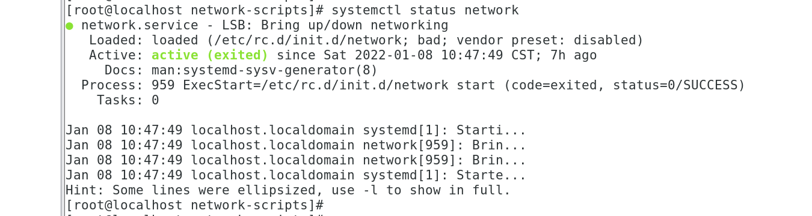
网络启停
停止网络服务，IP丢失
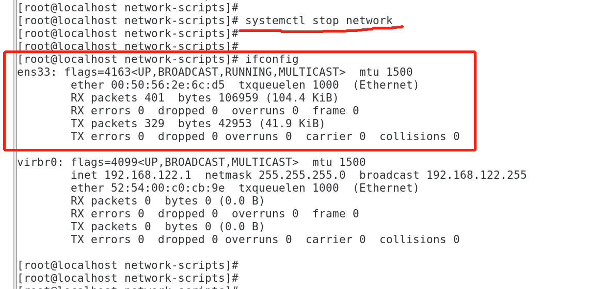
启动网络，IP打开
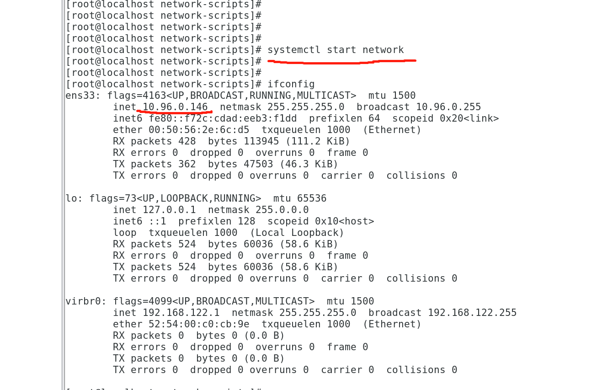
重启网络服务，（当你修改了网卡配置文件，就需要重启了）
如果你配置文件写错了，服务可能就会重启失败！！错误原因基本都是配置文件写错了。!!
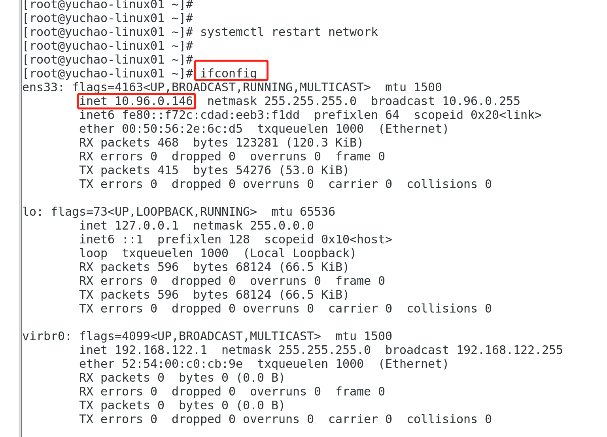
远程连接Linux
在实际的工作场景中，虚拟机界面或者物理服务器本地的终端都是很少接触的，因为服务器装完系统之后，都要拉倒IDC机房托管，如果是购买的云主机，那更碰不到服务器本体了，只能通过远程连接的方式管理自己的Linux系统。
因此在装好Linux系统之后，使用的第一步应该是配置好客户端软件（ssh软件进行连接）连接Linux系统。
ssh命令
作用
ssh为 Secure Shell 的缩写
ssh 用于登录远程主机, 并且在远程主机上执行命令
同时在不安全的网络之上, 两个互不 信任的主机之间, 提供加密的, 安全的通信连接。
SSH 是目前较可靠，专为远程登录会话和其他网络服务提供安全性的协议。利用 SSH 协议可以有效防止远程管理过程中的信息泄露问题。
SSH是标准的网络协议，可用于大多数UNIX操作系统，能够实现字符界面的远程登录管理，它默认使用22号端口，采用密文的形式在网络中传输数据，相对于通过明文传输的Telnet，具有更高的安全性。
SSH提供了口令和密钥两种用户验证方式，这两者都是通过密文传输数据的。不同的是，口令用户验证方式传输的是用户的账户名和密码，这要求输入的密码具有足够的复杂度才能具有更高的安全性。
ssh终端工具
SecureCRT
官网：www.vandyke.com SecureCRT是一款支持SSH(SSH1和SSH2)的终端仿真程序，简单地说是Windows下登录UNIX或Linux服务器主机的软件。
XShell
Xshell是一个强大的安全终端模拟软件，它支持SSH1, SSH2, 以及Microsoft Windows 平台的TELNET 协议。Xshell 通过互联网到远程主机的安全连接以及它创新性的设计和特色帮助用户在复杂的网络环境中享受他们的工作。
Putty
PuTTY为一开放源代码软件，主要由Simon Tatham维护，使用MIT licence授权。
MobaXterm
官网：https://mobaxterm.mobatek.net/
XSHELL使用
1.连接配置
1.先准备好机器（vmware）+centos系统
这就好比你在单位，维护一台服务器，第一步就是要连接这台服务器
你是选择坐在机房里头，搬过去显示器，键盘，桌子，凳子，穿上羽绒服吗？肯定不是。
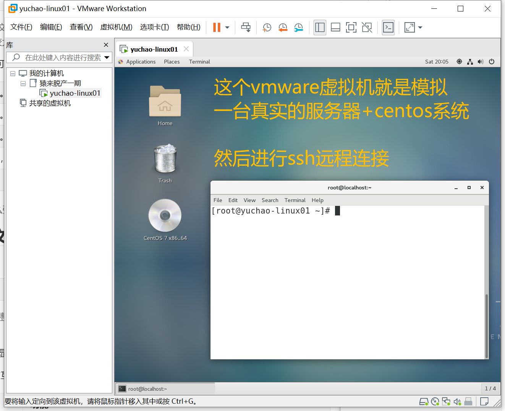
2.此时你会在机房，记录下服务器的IP，sshd服务的端口，root账户、密码。
准备远程连接
3.坐在办公室，使用你自己的笔记本，连接服务器即可
[root@yuchao-linux01 ~]# ifconfig
ens33: flags=4163<UP,BROADCAST,RUNNING,MULTICAST> mtu 1500
inet 10.96.0.146 netmask 255.255.255.0 broadcast 10.96.0.255
inet6 fe80::f72c:cdad:eeb3:f1dd prefixlen 64 scopeid 0x20<link>
ether 00:50:56:2e:6c:d5 txqueuelen 1000 (Ethernet)
RX packets 537 bytes 132776 (129.6 KiB)
RX errors 0 dropped 0 overruns 0 frame 0
TX packets 464 bytes 61286 (59.8 KiB)
TX errors 0 dropped 0 overruns 0 carrier 0 collisions 0
4.打开xshell，创建连接
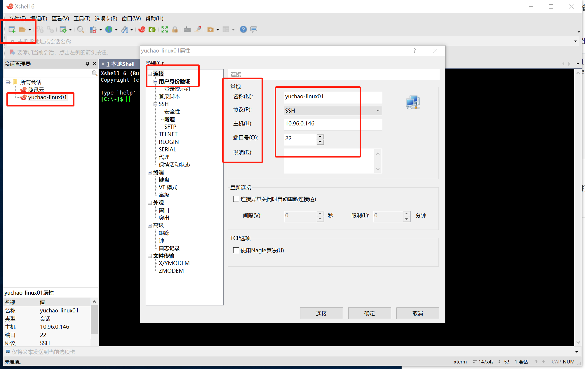
5.接收、信任该主机的指纹（确保连接的是你要的这台服务器）
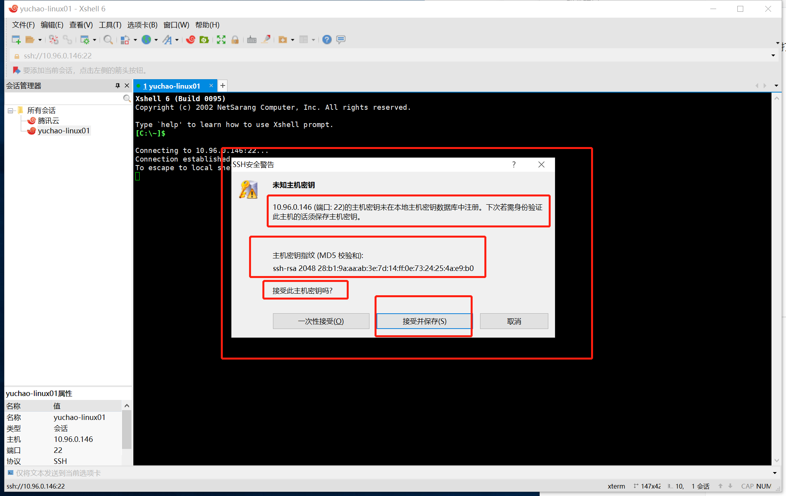
6.连接该服务器
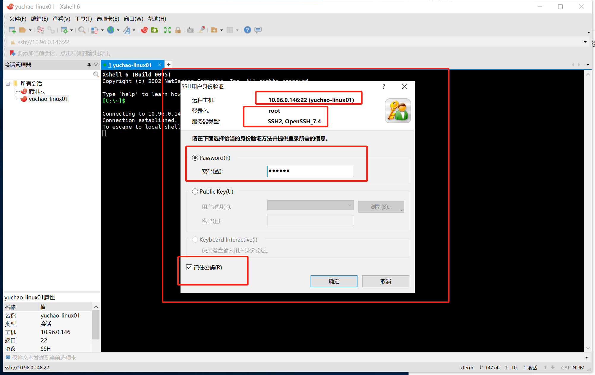
7.成功远程登录
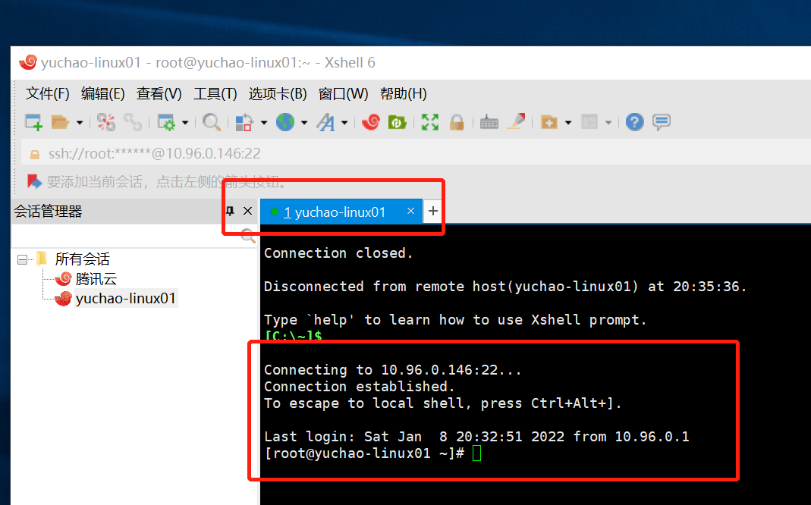
8.配置复制、粘贴
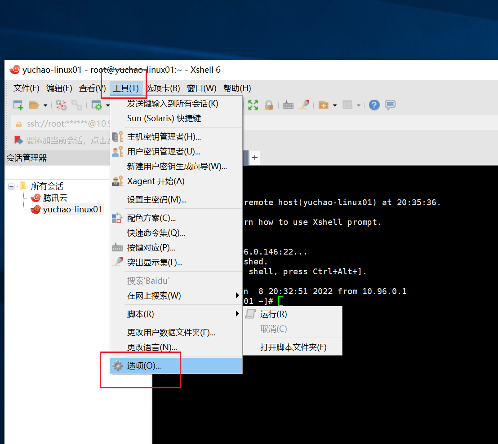
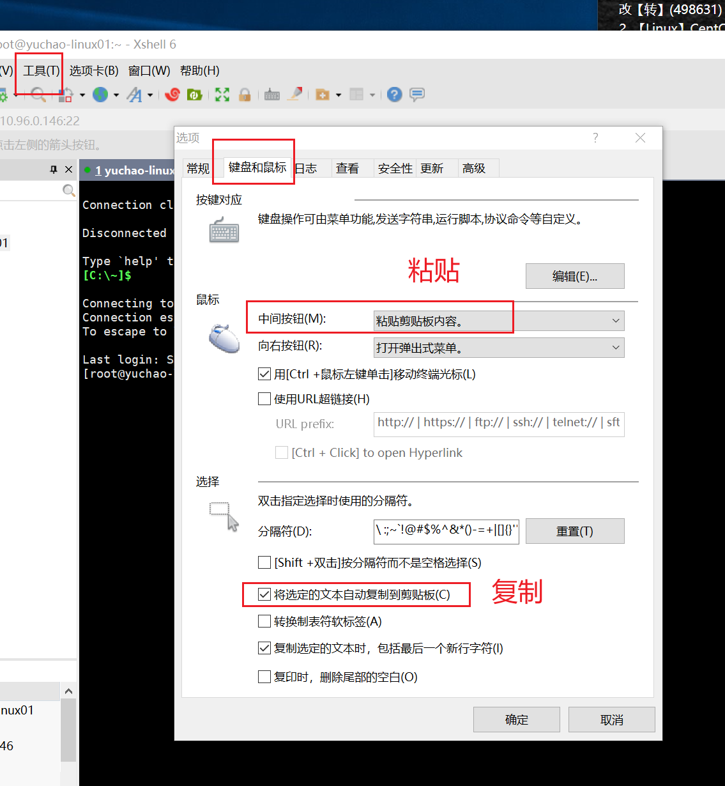
2.高效配置
快捷会话
IT工程师有时需要更为快速的登陆服务器，需要将常用服务器会话保存到XSHELL界面。其操作如下，用户首先登陆到对应的服务器上，如下图所示点击创建快速登陆按钮，则会出现服务器登陆的快速按钮，以后只需要点击此按钮就可以登陆服务器了。
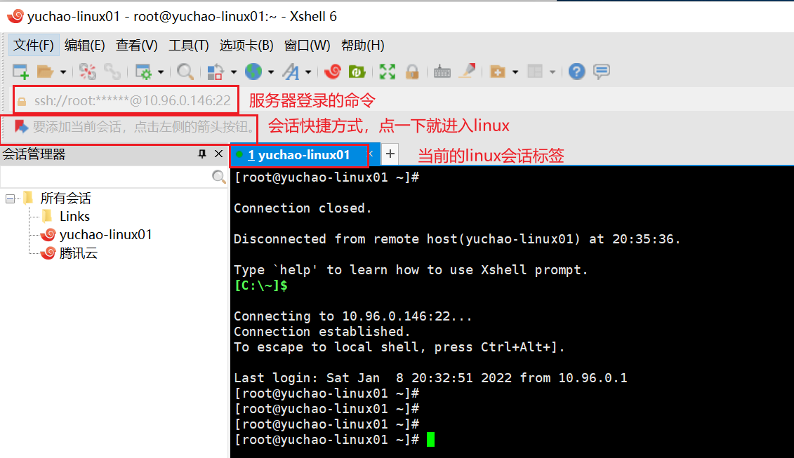
以后点一下就直接连接服务器了。
复制会话
如果没有快捷会话，又需要打开多个连接该机器的窗口，进行多任务，多窗口操作。
也可以直接双击会话，也可以。
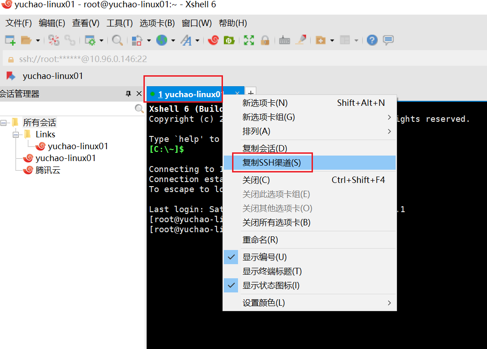
一窗多会话
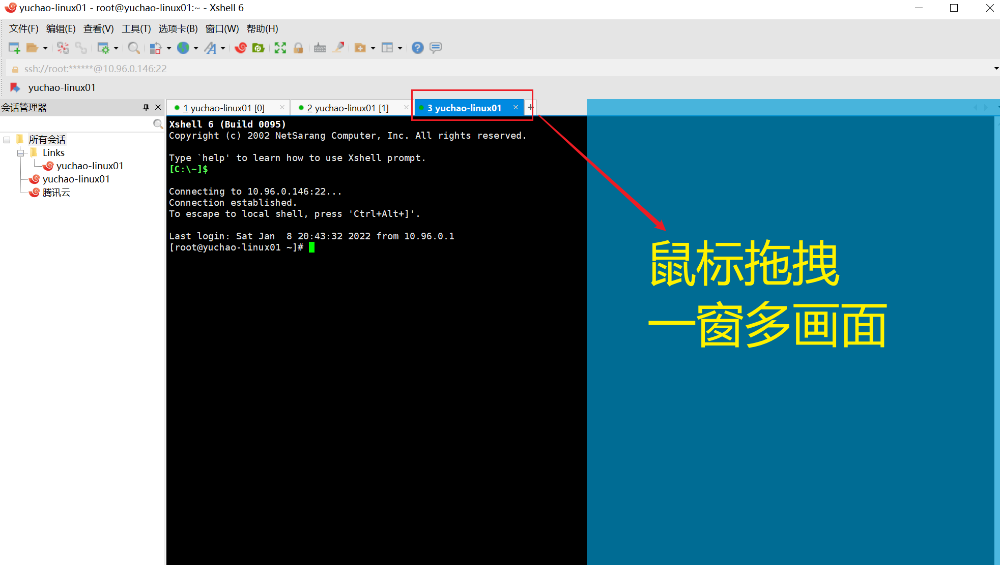
多窗口操作，你可以同时做三件事
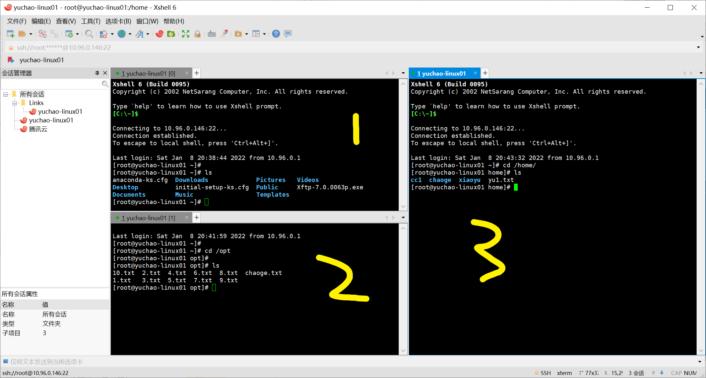
多窗口，同时操作
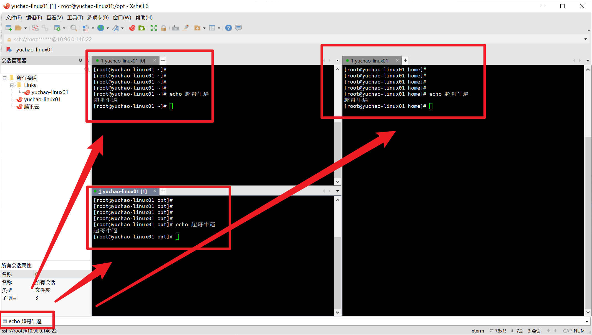
快捷键，退出登录
ctrl + d ，快速退出会话
3.外观字体
作为一款优秀的软件，界面的外观设计要满足不同的IT工程师的需求。XSHELL有默认的几种配色方案可以选择，可以让用户按照自己的习惯快速设置，使XSHELL外观轻松改变适应不同的IT工程师。
XSHELL可以根据服务器中的文件属性显示不同的颜色，如文件还是目录，普通文件还是可执行文件，文件特定的后缀(如归档文件，压缩文档的)等等。这使IT工程师根据文件颜色快速识别文件类型。
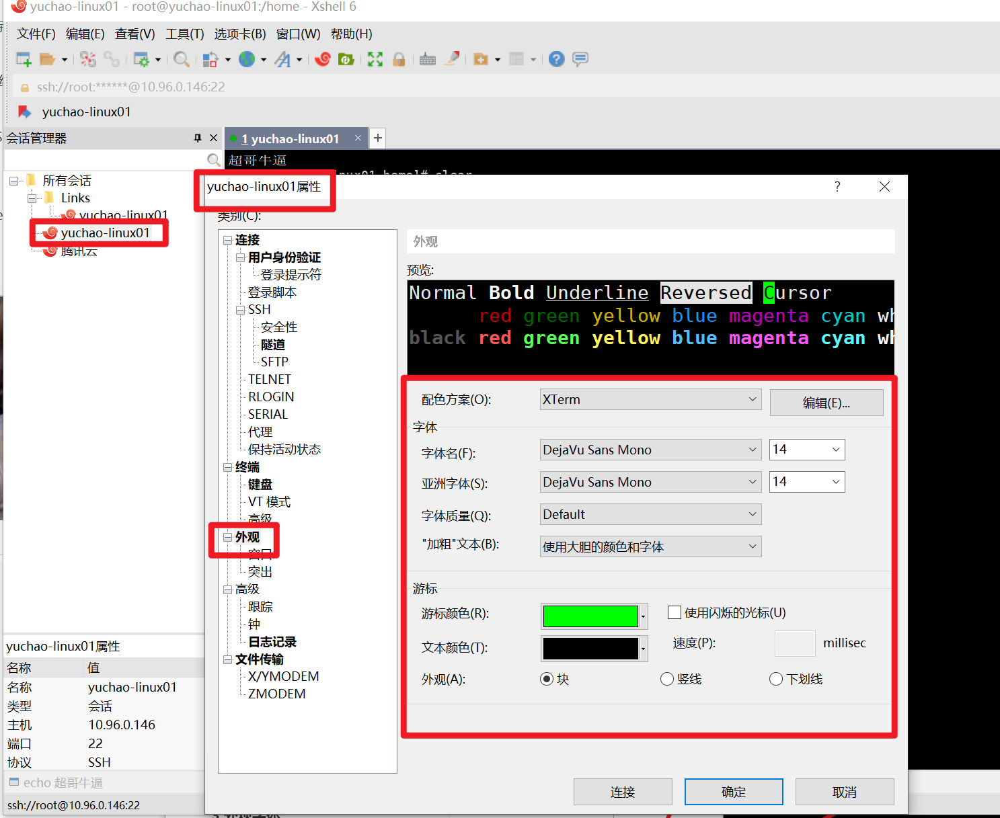
颜色区分
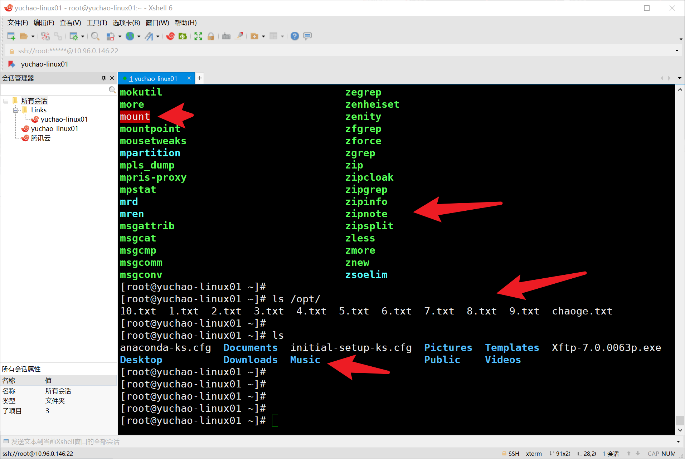
4.快捷键
敏捷工程师对于工作效率的追求是无止境的。
删除
ctrl + d 删除光标所在位置上的字符相当于VIM里x或者dl
ctrl + h 删除光标所在位置前的字符相当于VIM里hx或者dh
ctrl + k 删除光标后面所有字符相当于VIM里d shift+$
ctrl + u 删除光标前面所有字符相当于VIM里d shift+^
ctrl + w 删除光标前一个单词相当于VIM里db
ctrl + y 恢复ctrl+u上次执行时删除的字符
ctrl + ? 撤消前一次输入
alt + r 撤消前一次动作
alt + d 删除光标所在位置的后单词
移动
ctrl + a 将光标移动到命令行开头相当于VIM里shift+^
ctrl + e 将光标移动到命令行结尾处相当于VIM里shift+$
ctrl + f 光标向后移动一个字符相当于VIM里l
ctrl + b 光标向前移动一个字符相当于VIM里h
ctrl + 方向键左键 光标移动到前一个单词开头
ctrl + 方向键右键 光标移动到后一个单词结尾
ctrl + x 在上次光标所在字符和当前光标所在字符之间跳转
alt + f 跳到光标所在位置单词尾部
替换
ctrl + t 将光标当前字符与前面一个字符替换
alt + t 交换两个光标当前所处位置单词和光标前一个单词
alt + u 把光标当前位置单词变为大写
alt + l 把光标当前位置单词变为小写
alt + c 把光标当前位置单词头一个字母变为大写
^oldstr^newstr 替换前一次命令中字符串
历史命令编辑
ctrl + p 返回上一次输入命令字符
ctrl + r 输入单词搜索历史命令
alt + p 输入字符查找与字符相接近的历史命令
alt + > 返回上一次执行命令
其它
ctrl + s 锁住终端
ctrl + q 解锁终端
ctrl + l 清屏相当于命令clear
ctrl + c 另起一行
ctrl + i 类似TAB健补全功能
ctrl + o 重复执行命令
alt + 数字键 操作的次数
5.配置导出
你这一套配置，换一个机器，怎么继续使用？
导出配置
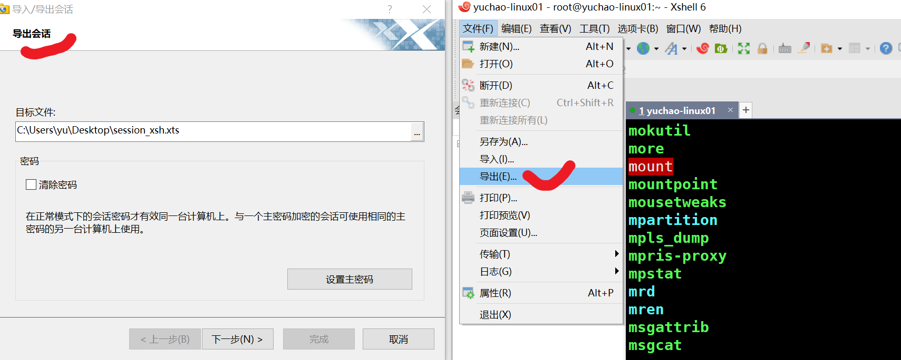
导入配置
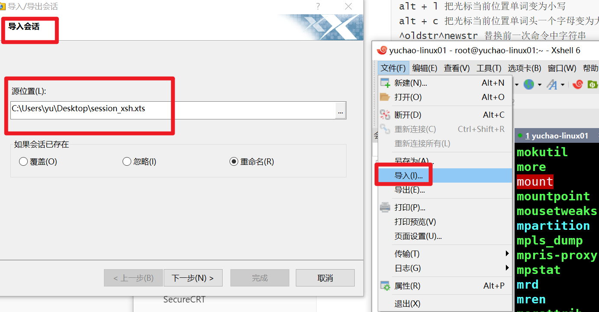